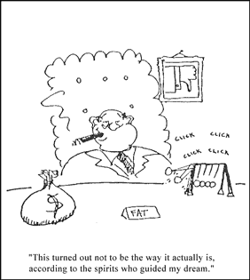

|

Lunch With The Fat Man #6
Practical advice for musicians and would-be musicians. But it's not just about the music. It's about life. It's about art. It's about lunch! Let's eat!
- - - - - - - - - -
by George Alistair Sanger
Installment index
"A Good Band is Hard to Find"
Hi. Sit down. What are you having'? Welcome to Lunch with the Fat Man.
I had a dream last night in which I was an A&R man for a major record label. I know that some sort of cosmic psychic process was guiding my dream. Perhaps I was experiencing the elusive "Major Label Contact" or "Connection" that I read about in Time/Life's series of books on Dark Mysteries of the Big Time, Volume 3: Musicians and Self-proclaimed Gods. Perhaps not. I know. though, that the sensation I had was utterly disconnected from my own grandiose expectations of that job. Everything was so frighteningly mundane, especially when compared to my previous imaginings, that I knew that my vision was being beamed to me from somewhere without, rather than within.
Before this dream, of course, I had always imagined that, as an A&R man, I would be smoking a big cigar, reclining in a tall leather chair. I would live for three hours a day behind a wide wooden desk covered tastefully and sparsely with three, maybe four, chrome, and wood "executive toys." I would spend my days saying "no" to talented bands because they refused to give me drugs, and spend my nights backstage with bands I had helped out, just saying "yes" over and over. This turned out not to be the way it Actually Is, according to the spirits who guided my dream.
 In my dreams I was neither thin nor fat, God forbid. I was a feeble jogger, fearing for my fragile ticker. An ex-smoker. A man with a fairly nice car and a wife and child (or was it an alimony and child support? The dream was not clear) to support. A man whose friends at work were all ambitious and intelligent enough not only to be in the music business, but to have succeeded in it. A man whose job was on the line with every decision he made, yet with no firm, scientific principle to help him make those decisions. A man whose desk held five hundred cassettes of awful bands waiting to be listened to, most of which sounded like the Stones playing sober. A man constantly aware that somewhere in there could actually be the next Stones, and if he didn't sign them, he'd be in big trouble. A man for whom nothing was easy. I was a man under pressure.
And in this dream, it occurred to me that I knew what was good in a band. It turned out to be quite different from what I had thought was a good band last Thursday night, when I had dreamed I was a headbanging skateboard freak. This is what I, as an A&R man, thought:
A good band is a band that does not hand me tapes while I'm jogging. True aerobic exercise requires me to maintain an elevated heart rate for twenty consecutive minutes, and this is difficult to do while shaking hands with a pimply-faced kid with a haircut.
A good-band does not keep me from my dentist appointment by giving me a tape over 20 minutes long.
A good band is a band that I know will make money. A band with a hot celebrity is a good band. Likewise, a band w/near-naked teenagers is a good band.
A good band is one that helps me keep my job.
A good band makes things easy for me.
A good band gives me confidence that they will answer their phone When I call. This qualification is divided into three parts; they must own a phone, they must be willing and able to answer it, and they must not move without leaving a forwarding number.
A good band will not insult my boss or embarrass me in front of anybody.
A good band will not act like they know my job better than I do.
A good band knows enough about the music business that I don't have to explain everything a million times. At the same time, they realize that their knowledge is incomplete, and don't go demanding the sun and the moon just because Michael Jackson has them in his contract.
A good band doesn't track mud into my office. They show up at meetings on time. They all own cars.
A good band doesn't cost the label a lot of money.
A good band sounds in some way like a band that has succeeded recently, so that the people at my company can feel confident that the band represents a timely investment. At the same time, the band sounds in some way like a band that has succeeded in the past, so that my people can feel assured that the band will have staying power. Simultaneously, a good band sounds entirely unique and original, so that we can know that they have a chance at being the next big thing.
A good band has some way of looking good to my company, so I don't have to sell them as hard. A gigantic following is nice. Good looks are nice. Spots on national news are nice. Pictures of them with the President or Elvis are nice; both is belter.
Upon waking up and reflecting on my dream, I had a vague sense that there was one other thing I was looking for in a band -- something I just didn't want to sign a band without. Around lunch time I figured it out.
I wanted to sign a band that made music that I liked.
Say, this was great. Let's have lunch more often.
 Next page | "Unlocking the Subconscious Doors Blocking Your jam sessions" Next page | "Unlocking the Subconscious Doors Blocking Your jam sessions"
1, 2, 3
|